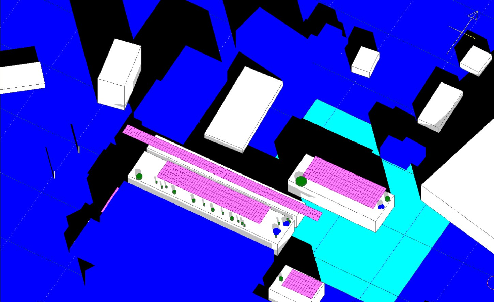

PVsyst vs Solar Pro cross-check on a 619 kWp roof
Same weather, same module, same 3D scene: the two programs agreed within 2.2% unshaded and 0.24 points on shading loss. What the gap means for finance.
Why run two programs
On a 619.2 kWp flat factory roof, PVsyst and Solar Pro, given the same weather, the same module file and the same 3D scene, agreed within 2.2% on unshaded yield and within 0.24 percentage points on shading loss. We use the more conservative PVsyst figure for finance and the Solar Pro figure as the upper end of the expected range.
Lenders in Korea and abroad ask for PVsyst. Many Korean designers also use Solar Pro, a Japanese program that calculates every module's I-V curve with its bypass diodes and shows shadows as 3D animations. The two programs model shading differently, so a single program's number can hide a modelling choice. We run both on every rooftop where shading matters and explain the difference rather than hide it.
The example below is a test factory roof that we also use in our advanced Solar Pro course. Names and location are removed; the numbers are as calculated.
The system
| Item | Value |
|---|---|
| Capacity | 619.2 kWp, 645 W modules x 960, flat roof, 0° tilt, portrait |
| Strings | 16 modules in series x 60 strings |
| Inverters | 110 kW x 5 |
| Scene | Three roofs, rooftop equipment, neighbouring buildings and the distant horizon (highest point about 9°) |
| Losses kept equal | Soiling 2%, availability 1%, degradation 0.5% per year |
Step 1: make the inputs identical
Most disagreements between programs come from inputs, not physics. We used the same hourly typical year in both, the same 645 W module data and the same 3D scene, checked by overlaying the two layouts from above: every PVsyst table and every Solar Pro array sits in the same place with the same size. Only after that check do we compare results.
For the weather itself we compared three sources at the site. The nearest Korea Meteorological Administration ground station, 45 km away, gave 1,513 kWh/m² per year over 14 valid years between 2010 and 2024 (one year with faulty records removed). NASA POWER gave 1,430 kWh/m², 5.4% lower, and the PVGIS 5.3 typical year gave 1,546 kWh/m², 2.2% higher. The spread between sources, 4.0%, goes into the uncertainty of the P90.
Step 2: compare without shading
| Method | kWh/kWp no shade | kWh/kWp with shade | kWh/year with shade |
|---|---|---|---|
| Solar Pro (module level) | 1,328 | 1,312 | 812,424 |
| PVsyst (string level) | 1,300 | 1,281 | 793,238 |
| Difference | +2.2% | +2.4% |
With shading switched off, the monthly yields of the two programs track each other closely: within 1% in most months, up to 5% in March and 7% in November. This confirms that the base is common, so any further difference can be attributed to shading.

Step 3: compare shading
Shading loss is found by running each program with shading on and off and dividing the two. Solar Pro gave 1.22%, PVsyst 1.46%. The annual difference is small, but the winter months tell the story: in December Solar Pro lost 2.7% and PVsyst 6.4%.
The reason is the model. PVsyst works at string level for the electrical shading effect, so when a shadow covers one module, the whole series string is reduced. That is conservative. Solar Pro combines the I-V curve of each module including bypass diodes, so a shaded module costs less. Regular shading such as row to row shading looks almost the same in both; the difference grows with partial shading from trees, poles, rooftop equipment and neighbouring buildings, which is exactly what this roof has in winter.

| Winter solstice | Sun altitude | Sun azimuth | Shadow of a 1 m object |
|---|---|---|---|
| 9 am | 17.7° | −42.6° | 3.1 m |
| Noon | 31.3° | −0.5° | 1.6 m |
| 3 pm | 17.3° | +43.3° | 3.2 m |
The shadow table explains why the loss concentrates from November to February: in the morning and afternoon the shadows of a 1 m object are three times as long as at noon, and they reach the end rows.
Step 4: turn it into a bankable figure
For the energy assessment we keep the PVsyst value. The typical year gives 793 MWh, a specific yield of 1,281 kWh/kWp and a performance ratio of 82.9%. After a long term weather correction the first year P50 is 776 MWh. With the year to year variation of the station record and the model uncertainties, the first year P90 is 691 MWh (89.0% of P50) and the ten year average P90 is 696 MWh (91.9%). The Solar Pro figure, 2.4% higher per kWp, is stated next to it as the favourable end of the range.
What the cross check is good for
- If the two programs agree, the yield can be trusted and the report says so in one line.
- If they disagree, the difference points to the part of the model to review: usually weather, the 3D scene or partial shading.
- Solar Pro shows which modules are shaded and when, which helps decide string routing. Here only three modules were shaded on the worst day.
- The final report states both numbers and the reason for the gap, which is what a lender's technical adviser will ask about.
If you are planning a project in Korea and want this check done on your site, email the drawings or the parcel list to info@ecokkorea.co.kr. We reply with the scope and schedule first.
Sources: our energy yield report for the test roof (PVsyst 8.1 hourly simulation and Solar Pro 4.8 annual calculation, November 2026), KMA ground station records 2010 to 2024, NASA POWER, PVGIS 5.3.
More insights
- Korean solar permitting setback rules explained
- How we size ESS for peak shaving with 15 minute data
- Agrivoltaic structure design basics
- Electrical BOQ and quantity take-off workflow
- Korea industrial electricity tariff 2026: rates, demand charges and a worked bill
- Solar permitting in Korea: the seven steps, statutory periods and a real timeline
- Net metering in Korea: the Article 18 rules and what changes on the bill
- Korea's agrivoltaics act: who can build, where, for how long, and the draft design rules
- Peak shaving ESS payback in Korea: a worked example with 2026 tariffs